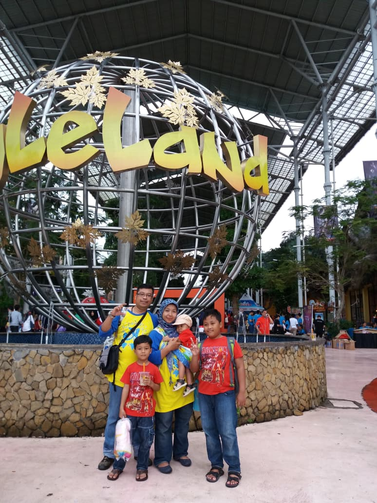
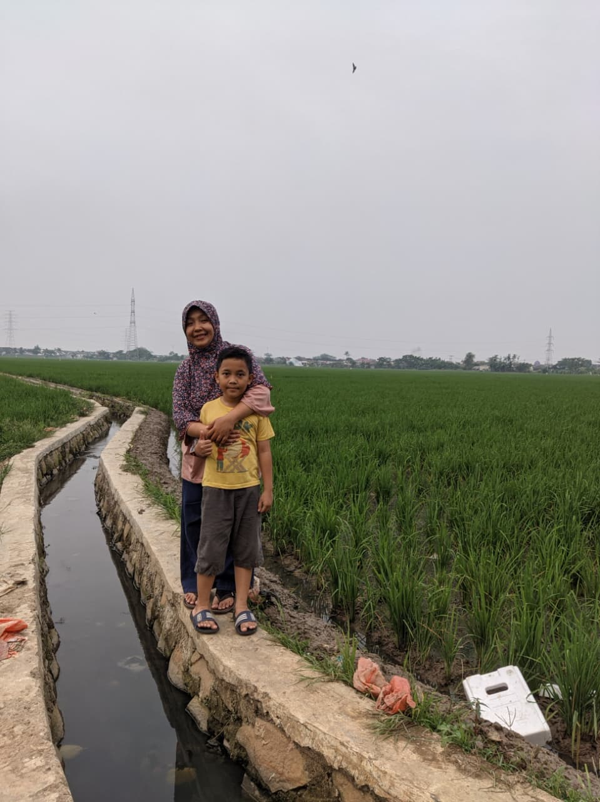
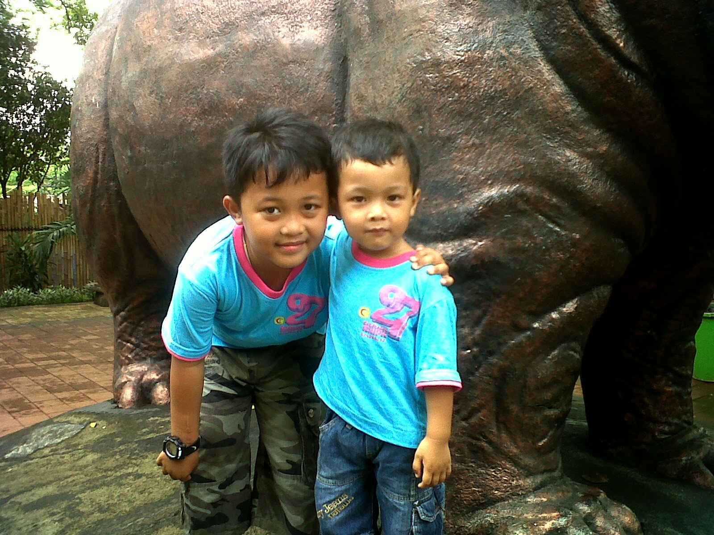
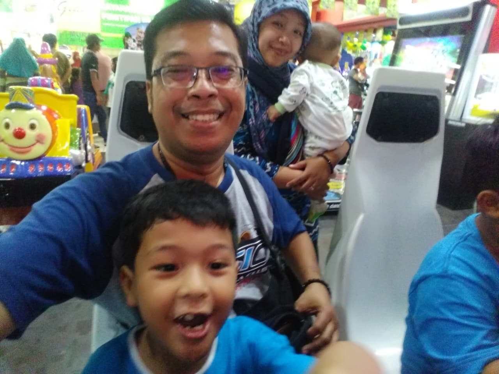
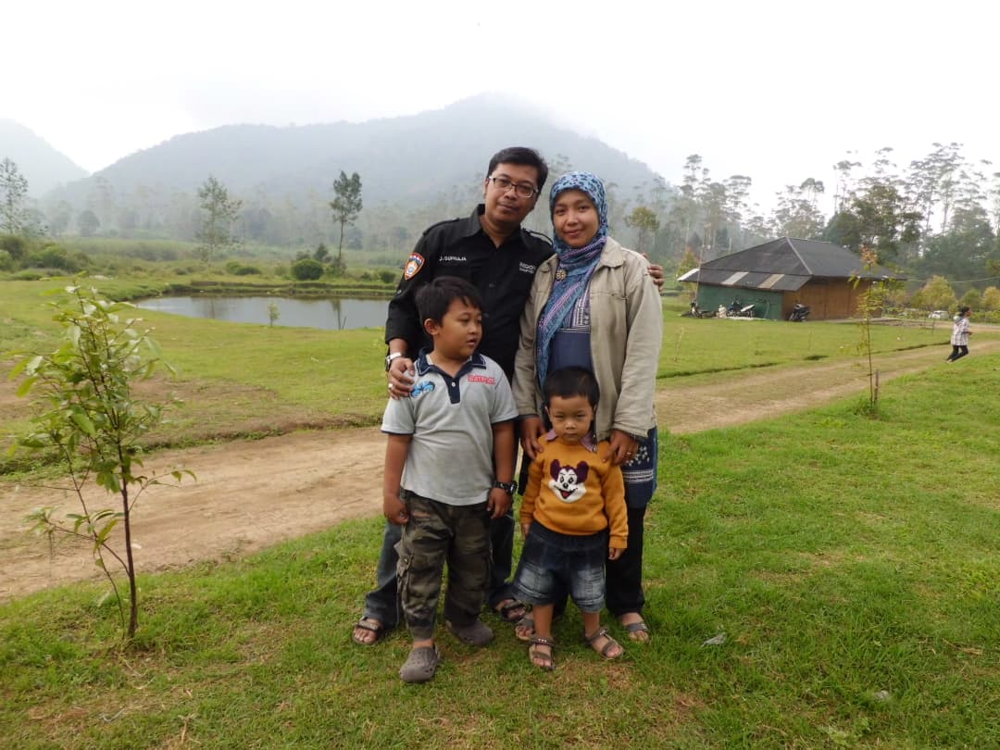
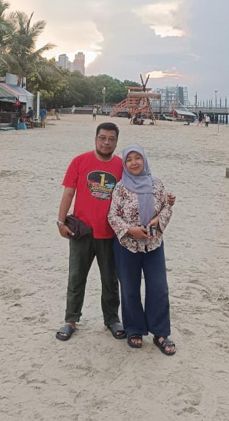
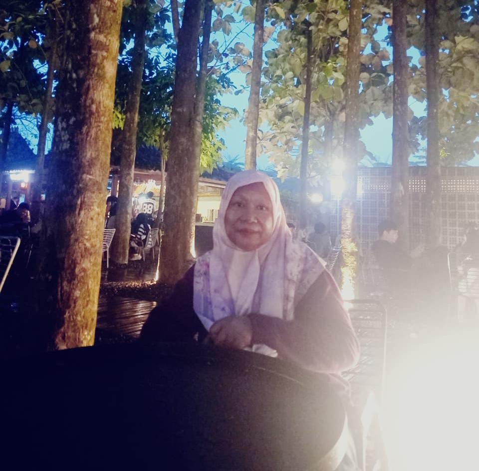

Album kecil, cinta yang besar
Tempat pulang
selalu kita.
Kumpulan tawa, perjalanan, dan momen sederhana yang membuat rumah terasa lebih hangat.
Lihat kenangan ↓
Kenangan terbaik
dibuat bersama
dibuat bersama
Tentang kami
“Dirumah marah terus, Lama ga ketemu juga kangen.”
— cerita dari rumah kecil kami
Potongan waktu
Kenangan yang
kami simpan.
Geser Pelan yaak.





